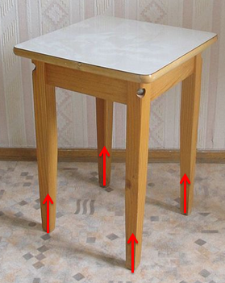
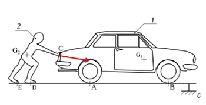
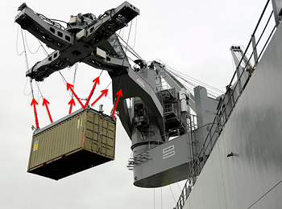
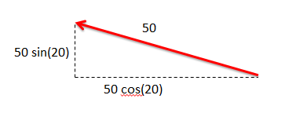
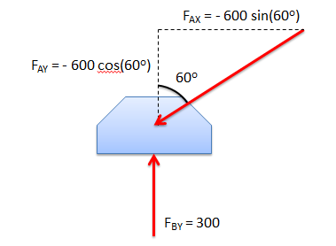

Point Force
A point force is any force where the point of application is considered to be a single point. Most forces are technically surface forces, where the force is applied over an area, but when the area is small enough (in comparison to the bodies being analyzed) it can be approximated as a point force. Point forces simplify static analysis so approximations are usually made wherever they are valid. Below are some examples of point forces acting on a body.
|

The normal forces exerted by the ground that supports each leg of this table are point forces.
|

This man is exerting a point force on this car by pushing it.
|
|
The friction force exerted by pulling the bow across this cello is point force.
|

The force each cable exerts to support this cargo container is a point force.
|
Point forces are usually represented with a single vector. As with all forces, the force has a magnitude, a direction and a point of contact. The magnitude of the force will often be denoted explicitly in a diagram and is often linked to the length of the vector for a point force. The direction of the point force is the direction of the vector. The point of application (which will always be a single point for a point force) is at either the head or the tail of the vector.
Another important feature of a point force is the line of action. The line of action of a force is the line on which the vector representing the force lies. By knowing the direction and the point of application of a force, the line of action can be deduced. The line of action of a force is an important concept for understanding concurrent forces and the principle of transmissibility which are discussed later.
Resolution of a Force into Components
As with all vectors, a force can be resolved into components to simplify analysis. The net effect of all components together on the body will be the same as the original force. The component along any axis can be found by projecting the force vector onto the given axis. The magnitude of the projected vector is the magnitude of that component of the force.
More details on decomposing vectors into components can be found on the "decomposing vectors" page.

Adding Forces:
Under certain circumstances, forces can be added together into a single net force that will have the same effect on the system as the combination of all the original forces. By combining forces, we can often simplify systems for analysis and be better able to solve for unknown forces.
Forces can be combined, or added into a single force, only if the forces are concurrent. Concurrent forces have lines of action that intersect at a single point. If forces are not concurrent, moments will be induced and the net effect of the forces is a force and a couple. Simplifying systems to a force and a couple is discussed in the moments chapter. For now we will only be examining concurrent force systems.
To add concurrent forces, one needs to add the vectors. The magnitude of the net force will not just be the sum of the magnitudes of the forces being summed. Vector addition can be done with either the parallelogram rule or by adding the components of the vectors (more details on the "vector addition" page). Adding the vectors will give magnitude and direction of the net force, or the sum of all the forces. The point of application of the net force will be the intersection point of all the lines of action.
Worked Problems
Worked Problem 1:
Give the x and y components of the point force D.
| Work | Comments |
|  |
The first step in decomposing the vector is to draw in a right triangle as a diagram. The original force is the hypotenuse, horizontal leg is the X component and the vertical leg is the Y component. The magnitudes of the two components correspond to the lengths of the legs of the right triangle. |
| \[ \mathrm{ X component = -50 \text{ lbs}\times\cos(20^o) = -17.1 \text{ lbs} }\] \[ \mathrm{ Y component = 50 \text{ lbs}\times\sin(20^o) = 47.0 \text{ lbs} }\] |
Solving for the lengths of the legs gives us the magnitudes of the components. Notice that the X component is negative because it is in the direction of the negative X axis. |
Worked Problem 2:
Find the magnitude and direction of the sum of these two forces.
| Work | Comments |
|
Because these two forces are concurrent, they can be added into a single resultant force vector. |
|
|  |
We will add these two vectors by adding their components rather than using the parallelogram rule. To do this we first need to break the vectors down into their X and Y components. Force FB is vertically oriented so it has no X component. |
| \[ \mathrm{ Sum X = 300 - 600 \times cos(60^o) = 0 \text{ N} }\] \[ \mathrm{ Sum Y = - 600 \times sin(60^o) = - 519.6 \text{ N} }\] |
We can then sum together all the X components and all of the Y components. |
|
Magnitude of the Resultant is 519.6 N. |
From the components we can directly infer the magnitude and direction of the resultant force (since there is no Y component to the resultant force vector.) |
 |
| Author: Jacob Moore has liscenced this work under a Creative Commons Attribution-NonCommercial 3.0 Unported License. |